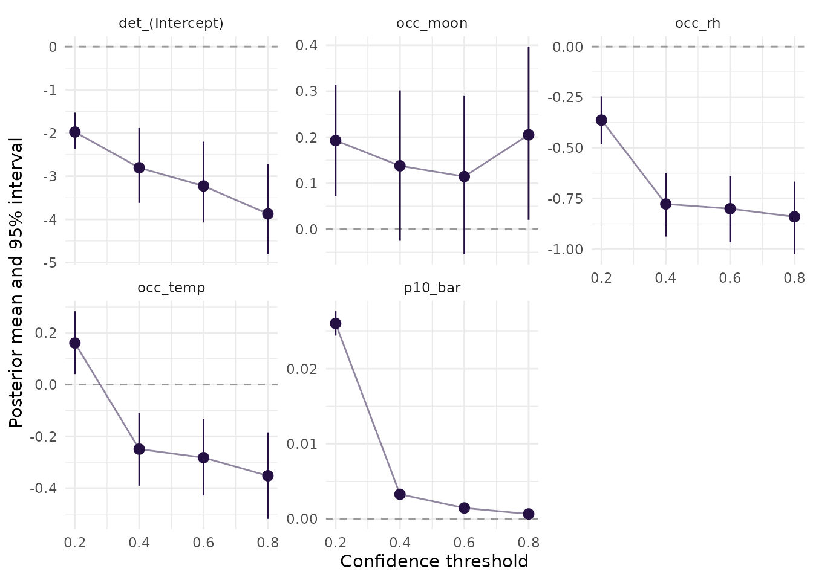

A classifier gives each recording a confidence score, and the analyst picks the score above which a recording counts as a detection. A low threshold keeps more true detections and more false ones; a high threshold loses both. The usual way to choose it is to measure precision and recall on a validation set and take, for instance, the threshold that maximizes their harmonic mean, F1 (Knight et al., 2017). Piatti et al. (2026) showed on the data used here that the choice can change the estimated environmental effects on occupancy.
A false-positive occupancy model changes the question. It estimates
the false-positive rate instead of assuming it is zero, so a threshold
that lets in more false positives should, in principle, be absorbed by a
higher estimated false-positive rate rather than by biased occupancy
effects. fp_threshold_sweep() checks whether that holds: it
builds the occasions at several thresholds with
fp_aggregate(), fits the same model to each, and collects
the estimates.
Thresholds from reviewed clips
Numeric thresholds remain available. Alternatively, pass reviewed
clips from fp_read_validation() to select MaxF1 and
MaxPrecision automatically:
reviews <- fp_read_validation("validation_by_clip.csv")
selected <- fp_threshold_sweep(
occasions, detections, sites = nights, site = "site_night",
thresholds = c("MaxF1", "MaxPrecision"), validation = reviews,
random_recorder = FALSE
)
attr(selected, "threshold_selection")
attr(selected, "validation_metrics")Each distinct reviewed score is a candidate threshold; scores equal
to the threshold count as detections. Precision measures the fraction of
retained clips that are true positives. Recall measures the fraction of
reviewed positives retained, and F1 combines precision and recall.
MaxPrecision tends to pick a high score with few retained clips, which
makes it unstable in small validation samples; look at
validation_metrics before trusting it. Ties favour greater
recall, then the smaller threshold. If both methods select the same
threshold, the model is fitted once.
The validation sample should represent the target species and the
score range of interest. Recall here refers to positives in that sample:
it does not count vocalizations missed by the classifier or excluded by
a previous score cutoff. Missing scores or verdicts are dropped with a
warning; at least one reviewed positive is needed. Use
species to select the target when the validation contains
several species. Validation is used only to select thresholds; it is not
automatically used as confirmation data in the occupancy model.
Running the sweep
The data are the one-minute recordings of the curiango
dataset, scored by the custom classifier of Piatti et al. (2026). Each
recording is an occasion; nights at a site are the sites of the
model.
zs <- function(v) as.numeric(scale(v))
m <- curiango$minutes
nt <- curiango$nights
occasions <- data.frame(file = paste(m$site_night, format(m$time, "%Y%m%d_%H%M")),
site_night = m$site_night, time = m$time,
bio = zs(m$bio), aci = zs(m$aci), recorder = m$site)
detections <- data.frame(file = occasions$file, confidence = m$conf_custom)
sites <- data.frame(site_night = nt$site_night, temp = zs(nt$temp),
rh = zs(nt$rh), moon = zs(log(nt$moon)))
verified <- data.frame(site_night = curiango$verified$site_night,
y = curiango$verified$y)
sweep <- fp_threshold_sweep(occasions, detections,
thresholds = c(0.2, 0.4, 0.6, 0.8),
sites = sites, verified = verified,
site = "site_night", recorder = "recorder",
occ = ~ temp + rh + moon, det = ~ bio + aci, fp = ~ 1,
threads_per_chain = 4)The function does not choose the thresholds. Here they span the range of the scores; in a real study, include the threshold chosen on the validation set (0.40 was the F1-maximizing threshold of this classifier in Piatti et al., 2026) and a few on either side. The four fits took 22 minutes in all.
Results
unique(sweep[c("threshold", "detection_rate")])
#> threshold detection_rate
#> 1 0.2 0.067664560
#> 11 0.4 0.017953909
#> 21 0.6 0.011706848
#> 31 0.8 0.006390201From the lowest to the highest threshold, the share of one-minute recordings counted as detections falls from 6.8% to 0.6%.

Posterior means and 95% intervals of the occupancy effects, the detection intercept, and the mean false-positive rate at four thresholds of the custom classifier.
keep <- c("occ_temp", "occ_rh", "occ_moon", "p10_bar")
tab <- sweep[sweep$parameter %in% keep,
c("threshold", "parameter", "mean", "lower", "upper", "max_rhat")]
tab[c("mean", "lower", "upper")] <- signif(tab[c("mean", "lower", "upper")], 3)
tab$max_rhat <- round(tab$max_rhat, 3)
tab[order(tab$parameter, tab$threshold), ]
#> threshold parameter mean lower upper max_rhat
#> 4 0.2 occ_moon 0.19300 0.071600 0.314000 1.004
#> 14 0.4 occ_moon 0.13800 -0.025200 0.302000 1.006
#> 24 0.6 occ_moon 0.11400 -0.054500 0.290000 1.005
#> 34 0.8 occ_moon 0.20500 0.020500 0.397000 1.005
#> 3 0.2 occ_rh -0.36300 -0.482000 -0.245000 1.004
#> 13 0.4 occ_rh -0.77700 -0.938000 -0.624000 1.006
#> 23 0.6 occ_rh -0.80000 -0.966000 -0.640000 1.005
#> 33 0.8 occ_rh -0.84000 -1.030000 -0.666000 1.005
#> 2 0.2 occ_temp 0.16100 0.040800 0.284000 1.004
#> 12 0.4 occ_temp -0.24900 -0.391000 -0.110000 1.006
#> 22 0.6 occ_temp -0.28200 -0.429000 -0.133000 1.005
#> 32 0.8 occ_temp -0.35200 -0.519000 -0.185000 1.005
#> 10 0.2 p10_bar 0.02600 0.024400 0.027600 1.004
#> 20 0.4 p10_bar 0.00327 0.002830 0.003760 1.006
#> 30 0.6 p10_bar 0.00144 0.001160 0.001760 1.005
#> 40 0.8 p10_bar 0.00065 0.000452 0.000875 1.005The mean false-positive rate per recording falls from 2.60% (2.44% to 2.76%) at a threshold of 0.2 to 0.06% (0.05% to 0.09%) at 0.8: the model attributes many of the extra detections at low thresholds to false positives, as intended.
The occupancy effects, however, are not stable over the whole range. From 0.4 to 0.8 they stay close: relative humidity goes from -0.78 (-0.94 to -0.62) to -0.84 (-1.03 to -0.67), and temperature from -0.25 (-0.39 to -0.11) to -0.35 (-0.52 to -0.18). At 0.2 they change: relative humidity is -0.36 (-0.48 to -0.25), and the temperature effect changes sign, to 0.16 (0.04 to 0.28). A constant false-positive rate does not absorb what a low threshold lets in.
False positives that follow the conditions of the night
One reading of the change at 0.2 is that the false positives let in
by a low threshold are themselves related to the conditions of the
night. If so, a constant false-positive rate assigns part of them to
occupancy, and the occupancy effects of those conditions are biased. The
remedy suggested in vignette("crywolf") is to model the
false-positive rate with the occupancy covariates. The thresholds 0.2
and 0.4 were refitted with fp = ~ temp + rh
(dev/precompute-threshold-fp.R; the two fits took 17
minutes):
pars <- c("occ_temp", "occ_rh", "fp_temp", "fp_rh", "p10_bar")
both <- rbind(
data.frame(fp = "~ 1", sweep[sweep$threshold %in% c(0.2, 0.4) &
sweep$parameter %in% pars, ]),
data.frame(fp = "~ temp + rh", sweep_fp[sweep_fp$parameter %in% pars, ]))
both[c("mean", "lower", "upper")] <- signif(both[c("mean", "lower", "upper")], 3)
both <- both[order(both$threshold, both$parameter, both$fp),
c("threshold", "parameter", "fp", "mean", "lower", "upper")]
rownames(both) <- NULL
both
#> threshold parameter fp mean lower upper
#> 1 0.2 fp_rh ~ temp + rh -0.07960 -0.143000 -0.01780
#> 2 0.2 fp_temp ~ temp + rh 0.27400 0.216000 0.33600
#> 3 0.2 occ_rh ~ 1 -0.36300 -0.482000 -0.24500
#> 4 0.2 occ_rh ~ temp + rh -0.36800 -0.491000 -0.24800
#> 5 0.2 occ_temp ~ 1 0.16100 0.040800 0.28400
#> 6 0.2 occ_temp ~ temp + rh 0.09040 -0.024400 0.20700
#> 7 0.2 p10_bar ~ 1 0.02600 0.024400 0.02760
#> 8 0.2 p10_bar ~ temp + rh 0.02740 0.025700 0.02930
#> 9 0.4 fp_rh ~ temp + rh -0.38100 -0.498000 -0.25500
#> 10 0.4 fp_temp ~ temp + rh 0.13200 -0.000408 0.27000
#> 11 0.4 occ_rh ~ 1 -0.77700 -0.938000 -0.62400
#> 12 0.4 occ_rh ~ temp + rh -0.71900 -0.882000 -0.56800
#> 13 0.4 occ_temp ~ 1 -0.24900 -0.391000 -0.11000
#> 14 0.4 occ_temp ~ temp + rh -0.25500 -0.390000 -0.11200
#> 15 0.4 p10_bar ~ 1 0.00327 0.002830 0.00376
#> 16 0.4 p10_bar ~ temp + rh 0.00369 0.003190 0.00424At 0.2 the false-positive rate rises with temperature, 0.27 (0.22 to 0.34) on the logit scale, and falls slightly with humidity, -0.08 (-0.14 to -0.02). With these terms, the occupancy effect of temperature shrinks from 0.16 (0.04 to 0.28) to 0.09 (-0.02 to 0.21), and its interval now just includes zero. It does not return to the negative value found at 0.4 and above. The humidity effect hardly changes, from -0.36 (-0.48 to -0.25) to -0.37 (-0.49 to -0.25), and stays weaker than at 0.4. At 0.4 the false-positive rate falls with humidity, -0.38 (-0.50 to -0.26), yet the occupancy effects barely move: humidity goes from -0.78 (-0.94 to -0.62) to -0.72 (-0.88 to -0.57), and temperature stays at -0.25 (-0.39 to -0.11). Both refits had no divergent transitions and a largest R-hat of 1.004.
So false positives that follow the temperature of the night explain part of the change at the low threshold, but not all of it: what remains may come from false positives related to conditions not in the formula, or from changes in detection, which also depends on the threshold. This is consistent with the simulations behind crywolf (Provete et al., in preparation), in which putting the occupancy covariates in the false-positive formula reduced the bias of the occupancy effects without removing it. The estimates at 0.2 should therefore still not be trusted, and the stability from 0.4 upwards, which includes the F1-maximizing threshold, is the reassuring part of the sweep.
Reading a sweep
- Stable occupancy effects across thresholds suggest that the false-positive part of the model is doing its job: the threshold mostly changes the estimated detection and false-positive rates.
-
Occupancy effects that drift with the threshold
mean that the threshold affects detections in a way the model does not
capture, for instance false positives that depend on a covariate. Try a
false-positive formula with the occupancy covariates
(
vignette("crywolf")) before trusting any single threshold. - Very high thresholds leave few detections, and the estimates become wide and lean on the priors. Very low ones make the false-positive rate large, and the gap between true and false detection small.
- Check the diagnostics of each fit (the
divergencesandmax_rhatcolumns) before comparing them.
References
Knight, E. C., Hannah, K. C., Foley, G. J., Scott, C. D., Brigham, R. M., & Bayne, E. (2017). Recommendations for acoustic recognizer performance assessment with application to five common automated signal recognition programs. Avian Conservation and Ecology, 12, 14. https://doi.org/10.5751/ACE-01114-120214
Piatti, L., de Sousa, D. L. H., Oliveira, B. S., de Melo, A. V., Sugai, L. S. M., & Provete, D. B. (2026). Methodological choices influence ecological inference in passive acoustic monitoring of a Neotropical nightjar. Journal of Avian Biology, in press.
Provete, D. B., et al. (in preparation).